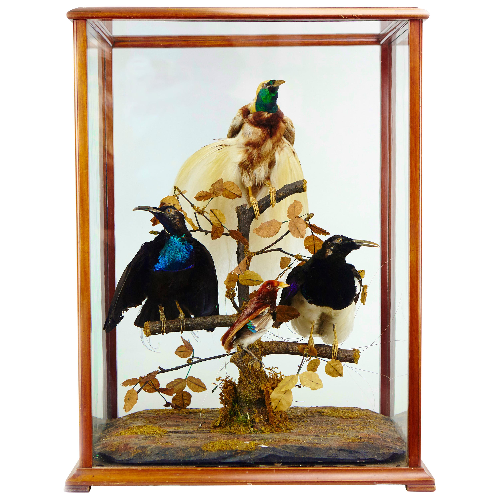
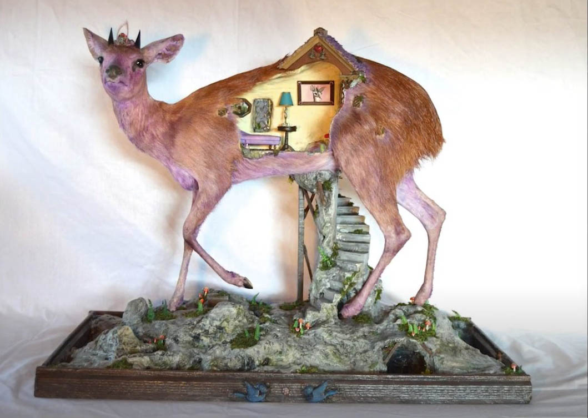

Taxidermy
From a real NOT fake source - Rei :3c

Taxidermy is the art of preserving an animal's body via mounting (over an armature) or stuffing, for the purpose of display or study. Animals are often, but not always, portrayed in a lifelike state. The word taxidermy describes the process of preserving the animal, but the word is also used to describe the end product, which are called taxidermy mounts or referred to simply as "taxidermy". The word taxidermy is derived from the Greek words taxis and derma.[1] Taxis means "arrangement", and derma means "skin" (the dermis).[1] The word taxidermy translates to "arrangement of skin".
Taxidermy is practiced primarily on vertebrates[2] (mammals, birds, fish, reptiles, and less commonly on amphibians) but can also be done to larger insects and arachnids[3] under some circumstances. Taxidermy takes on a number of forms and purposes including hunting trophies and natural history museum displays. Museums use taxidermy as a method to record species, including those that are extinct and threatened,[4] in the form of study skins and life-size mounts. Taxidermy is sometimes also used as a means to memorialize pets.
A person who practices taxidermy is called a taxidermist. They may practice professionally, catering to museums and sportspeople (hunters and fishermen), or as amateurs (hobbyists). A taxidermist is aided by familiarity with anatomy, sculpture, painting, and tanning.
Contents
History
Taxidermy as art

The golden age of taxidermy was during the Victorian era, when mounted animals became a popular part of interior design and decor.[12] English ornithologist John Hancock is considered to be the father of modern taxidermy.[13] An avid collector of birds, which he would shoot himself, he began modelling them with clay and casting in plaster.
For the Great Exhibition of 1851 in London, he mounted a series of stuffed birds as an exhibit. They generated much interest among the public and scientists alike who considered them as superior to earlier models and were regarded as the first lifelike and artistic specimens on display.[14] A judge remarked that Hancock's exhibit "... will go far towards raising the art of taxidermy to a level with other arts which have hitherto held higher pretensions".
Hancock's display sparked great national interest in taxidermy, and amateur and professional collections for public view proliferated rapidly. Displays of birds were particularly common in middle-class Victorian homes – even Queen Victoria amassed an impressive bird collection. Taxidermists were also increasingly used by the bereaved owners of dead pets to 'resurrect' them.
Athropomorphic taxidermy

In the late 1800s, a style known as anthropomorphic taxidermy became popular. A 'Victorian whimsy', mounted animals were dressed as people or displayed as if engaged in human activities. An early example of this genre was displayed by Herman Ploucquet, from Stuttgart, Germany, at the Great Exhibition in London.
The best-known practitioner in this genre was the English taxidermist Walter Potter, whose most famous work was The Death and Burial of Cock Robin. Among his other scenes were "a rat's den being raided by the local police rats ... [a] village school ... featuring 48 little rabbits busy writing on tiny slates, while the Kittens' Tea Party displayed feline etiquette and a game of croquet."[18] Apart from the simulations of human situations, he had also added examples of bizarrely deformed animals such as two-headed lambs and four-legged chickens. Potter's museum was so popular that an extension was built to the platform at Bramber railway station.
Other Victorian taxidermists known for their iconic anthropomorphic taxidermy work are William Hart and his son Edward Hart.[20] They gained recognition with their famous series of dioramas featuring boxing squirrels. Both William and Edward created multiple sets of these dioramas. One 4-piece set of boxing squirrel dioramas (circa 1850) sold at auction in 2013 for record prices. The four dioramas were created as a set (with each diorama portraying the squirrels at a different stage during their boxing match); however, the set was broken up and each was sold separately at the same auction. The set was one of a number they created over the years featuring boxing squirrels.
Famous examples of modern anthropomorphic taxidermy include the work of artist Adele Morse, who gained international attention with her "Stoned Fox" sculpture series,[21] and the work of artist Sarina Brewer, known for her Siamese twin squirrels and flying monkeys partaking in human activities.
Rogue taxidermy

Rogue taxidermy (sometimes referred to as "taxidermy art"[24]) is a form of mixed media sculpture.[22][25] Rogue taxidermy art references traditional trophy or natural history museum taxidermy, but is not always constructed out of taxidermied animals;[22][25] it can be constructed entirely from synthetic materials.[22][26] Additionally, rogue taxidermy is not necessarily figurative, as it can be abstract and does not need to resemble an animal.[22] It can be a small decorative object or a large-scale room-sized installation. There is a very broad spectrum of styles within the genre, some of which falls into the category of mainstream art.[22][27] "Rogue taxidermy" describes a wide variety of work, including work that is classified and exhibited as fine art.[26] Neither the term, nor the genre, emerged from the world of traditional taxidermy.[25] The genre was born from forms of fine art that utilize some of the components found in the construction of a traditional taxidermy mount.[25] The term "rogue taxidermy" was coined in 2004 by an artist collective called The Minnesota Association of Rogue Taxidermists.[26][28] The Minneapolis-based group was founded by artists Sarina Brewer, Scott Bibus, and Robert Marbury as a means to unite their respective mediums and differing styles of sculpture.[28][29] The definition of rogue taxidermy set forth by the individuals who formed the genre (Brewer, Bibus, and Marbury) is: "A genre of pop-surrealist art characterized by mixed media sculptures containing conventional taxidermy-related materials that are used in an unconventional manner".[24][30][31] Interest in the collective's work gave rise to an artistic movement referred to as the Rogue Taxidermy art movement, or alternately, the Taxidermy Art movement.[25][30][32][33] Apart from describing a genre of fine art,[25][22][32] the term "rogue taxidermy" has expanded in recent years and has also become an adjective applied to unorthodox forms of traditional taxidermy such as anthropomorphic mounts and composite mounts where two or more animals are spliced together.[34][35] (e.g.; sideshow gaffs of conjoined "freak" animals and mounts of jackalopes or other fictional creatures) In addition to being the impetus for the art movement, the inception of the genre also marked a resurgence of interest in conventional (traditional) forms of taxidermy
Methods
Traditonal skin-mount
The methods taxidermists practice have been improved over the last century, heightening taxidermic quality and lowering toxicity. The animal is first skinned in a process similar to removing the skin from a chicken prior to cooking. This can be accomplished without opening the body cavity, so the taxidermist usually does not see internal organs or blood. Depending on the type of skin, preserving chemicals are applied or the skin is tanned. It is then either mounted on a mannequin made from wood, wool and wire, or a polyurethane form. Clay is used to install glass eyes and can also be used for facial features like cheekbones and a prominent brow bone. Modeling clay can be used to reform features as well, if the appendage was torn or damaged clay can hold it together and add muscle detail. Forms and eyes are commercially available from a number of suppliers. If not, taxidermists carve or cast their own forms.
Taxidermists seek to continually maintain their skills to ensure attractive, lifelike results. Mounting an animal has long been considered an art form, often involving months of work; not all modern taxidermists trap or hunt for prized specimens.
Animal specimens can be frozen, then thawed at a later date to be skinned and tanned. Numerous measurements are taken of the body. A traditional method that remains popular today involves retaining the original skull and leg bones of a specimen and using these as the basis to create a mannequin made primarily from wood wool (previously tow or hemp wool was used) and galvanised wire. Another method is to mould the carcass in plaster, and then make a copy of the animal using one of several methods. A final mould is then made of polyester resin and glass cloth, from which a polyurethane form is made for final production. The carcass is then removed and the mould is used to produce a cast of the animal called a 'form'. Forms can also be made by sculpting the animal first in clay. Many companies produce stock forms in various sizes. Glass eyes are then usually added to the display, and in some cases, artificial teeth, jaws, tongue, or for some birds, artificial beaks and legs can be used.
Reproduction mount
Some methods of creating a trophy mount do not involve preserving the actual body of the animal. Instead, detailed photos and measurements are taken of the animal so a taxidermist can create an exact replica in resin or fiberglass that can be displayed in place of the real animal. No animals are killed in the creation of this type of trophy mount. One situation where this is practiced is in the world of sport fishing where catch and release is becoming increasingly prevalent. Reproduction mounts are commonly created for (among others) trout, bass, and large saltwater species such as the swordfish and blue marlin. Another situation where reproduction trophies are created is when endangered species are involved. Endangered and protected species, such as the rhinoceros, are hunted with rifles loaded with tranquilizer darts rather than real bullets. While the animal is unconscious, the hunter poses for photos with the animal while it is measured for the purpose of creating a replica, or to establish what size of prefabricated fiberglass trophy head can be purchased to most closely approximate the actual animal. The darted animal is not harmed. The hunter then displays the fiberglass head on the wall in lieu of the real animal's head to commemorate the experience of the hunt.
Study skins
A study skin is a taxidermic zoological specimen prepared in a minimalistic fashion that is concerned only with preserving the animal's skin, not the shape of the animal's body.[42] As the name implies, study skins are used for scientific study (research), and are housed mainly by museums. A study skin's sole purpose is to preserve data, not to replicate an animal in a lifelike state.[42] Museums keep large collections of study skins in order to conduct comparisons of physical characteristics to other study skins of the same species. Study skins are also kept because DNA can be extracted from them when needed at any point in time.
A study skin's preparation is extremely basic. After the animal is skinned, fat is methodically scraped off the underside of the hide. The underside of the hide is then rubbed with borax or cedar dust to help it dry faster. The animal is then stuffed with cotton and sewn up. Mammals are laid flat on their belly. Birds are prepared lying on their back. Study skins are dried in these positions to keep the end product as slender and streamlined as possible so large numbers of specimens can be stored side-by-side in flat file drawers, while occupying a minimum amount of space.[44] Since study skins are not prepared with aesthetics in mind they do not have imitation eyes like other taxidermy, and their cotton filling is visible in their eye openings.
References
my brain and my heart :3
External Links
- Media related to Taxidermy at Wikimedia Commons
- Taxidermy.blog
- Taxidermy.Net
- Methods in the Art of Taxidermy by Oliver Davie
- Free Taxidermy School.Com